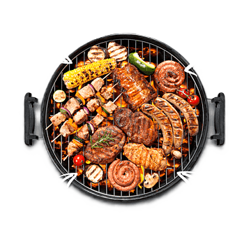

Nuestro Menu Mas Famoso Se Comforma Por Los Siguientes Platos
Platos Colombianos
Platos internacionales De
Algunas Partes Del Mundo
Antioquia

La Bandeja Paisa es un plato colombiano que tradicionalmente contiene frijoles rojos, arroz, carne molida, chicharrón, chorizo, huevo frito, plátano maduro, aguacate, arepa
Argentina
El Asado no es solo carne a la parrilla, es un ritual social. Cortes como vacío, costilla y chorizo se cocinan lentamente al carbón
Valle Del Cauca
El arroz Atollado Es un preparado con arroz, carne de cerdo (costilla, chorizo o longaniza), papa criolla, cebolla, ajo y tomate. Tiene una textura cremosa gracias a la cocción lenta y al almidón del arroz
Mexico
El Asado no es solo carne a la parrilla, es un ritual social. Cortes como vacío, costilla y chorizo se cocinan lentamente al carbón
Tolima
El Tamal Tolimense contiene Masa de maíz con arroz, pollo, cerdo, zanahoria, huevo y garbanzos, envuelto en hoja de plátano y cocinado al vapor.
Paella
La paella tradicional combina arroz con una mezcla de ingredientes frescos como pollo, conejo, verduras (judías verdes, tomate, pimiento), y a veces mariscos o pescado, dependiendo de la versión.
Córdoba
El arroz Atollado Es un plato tradicional vallecaucano parecido a un risotto, preparado con arroz, carne de cerdo (costilla, chorizo o longaniza), papa criolla, cebolla, ajo y tomate. Tiene una textura cremosa gracias a la cocción lenta y al almidón del arroz
Japón
El sushi es un plato tradicional japonés elaborado con arroz avinagrado acompañado de pescado crudo, mariscos, vegetales y, en ocasiones, huevo. Se presenta en diversas formas como maki (rollos), nigiri (bolita de arroz con pescado encima) o sashimi (solo pescado crudo, sin arroz).